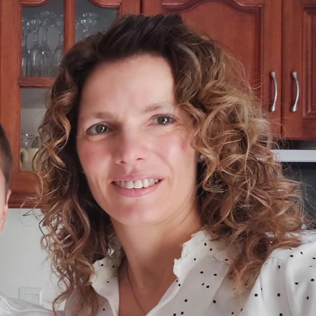

Holis!!!
 Bueno podemos hacer esto por las malas
Bueno podemos hacer esto por las malas  con muchas oraciones super formales y académicas llenas con mis logros que puff …no se imaginan cuántos…
con muchas oraciones super formales y académicas llenas con mis logros que puff …no se imaginan cuántos…  O podemos intentar algo más entretenido…
O podemos intentar algo más entretenido…
Nací un 18 de mayo de 1982, si, día de la escarapela en plena gesta de Malvinas,
mi papá veterano de guerra al que siempre considere héroe pero me advirtieron que no lo llame así, ya que héroes son los caídos  y no los que hacen actos heroicos… una incoherencia más de la vida…ok estábamos en mi papá que se llama Salvador (MANTENE CLICKEADA LA FOTO) y mi mamá Ana, dos seres maravillosos que a pesar del enorme esfuerzo no lograron llevarme por el buen camino, pero lo que llevo de bueno tiene su origen ahí.
y no los que hacen actos heroicos… una incoherencia más de la vida…ok estábamos en mi papá que se llama Salvador (MANTENE CLICKEADA LA FOTO) y mi mamá Ana, dos seres maravillosos que a pesar del enorme esfuerzo no lograron llevarme por el buen camino, pero lo que llevo de bueno tiene su origen ahí.
También tengo dos hermanas mayores, Gabriela  y Grisel que siguiendo la línea yo debería haberme llamado Gretel o Graciela pero zafe y me pusieron Valeria, perdón Greteles y Gracielas todo bien con ustedes.
Un buen día decidí darle dolores de cabeza a varios profes del conservatorio más o menos a la edad de 8 o 9, entonces empecé estudiando oboe, si ya sé, quien te conoce oboe? pero bueno, lo pueden googlear y les dejo fotito suena lindo y todo, luego incorpore piano, y el canto a los 16 haga click aquí para conocer mis maestros y profes de canto.
La música me llevo a conocer a mi marido Pablo con quién estoy casada desde 2005, es la persona que más me ha inspirado, detrás de cada proyecto está él siendo el motor, con apoyo incansable e incondicional.
Juntos tenemos a Ari  nuestri peque que nació un 9 de diciembre de 2010. Y no es porque yo sea la madre pero es el ser más talentoso, divertido, y cariñoso que pude haber conocido.
nuestri peque que nació un 9 de diciembre de 2010. Y no es porque yo sea la madre pero es el ser más talentoso, divertido, y cariñoso que pude haber conocido.
Trabajo en el coro estable de los organismos artísticos del sur, desde Enero 2015 algo que me costó muchos, muchos, muchos años conseguir para ser exactos 10, 8 audiciones pasaron, hasta que pudo más mi insistencia. De vez en cuando se me alinean los planetas y pego algún solo. Pero la mayoría del tiempo hago mis cantos en la cuerda de alto 2 que son una verdadera bendición. Vivan las alto! Las amo chicas, son lo más!, ademas tengo los mejores compas del mundo realmente hacen del trabajo un momento de total disfrute.
Bueno volviendo a mis logros…  eh.. mejor vamos terminando eso fue prácticamente todo, lo demás es confetti, o confite lo que les guste más!
eh.. mejor vamos terminando eso fue prácticamente todo, lo demás es confetti, o confite lo que les guste más!
Ah sì me olvidaba de alguien muy importante!: Lorenzo,  el loro-saurio más maravilloso del mundo que nos eligió como familia, realmente para los que no lo sabían los loros son la evolución del t-rex, no se extinguieron como afirma la ciencia y esa gente que no sabe nada, por eso solemos llamarlo cariñosamente nuestro "dinosaurio compacto" y doy gracias eternas por gozar de su estruendosa compañía.
el loro-saurio más maravilloso del mundo que nos eligió como familia, realmente para los que no lo sabían los loros son la evolución del t-rex, no se extinguieron como afirma la ciencia y esa gente que no sabe nada, por eso solemos llamarlo cariñosamente nuestro "dinosaurio compacto" y doy gracias eternas por gozar de su estruendosa compañía.
Por cierto tiene su propio Instagram.
Fin ...
O fin de este capítulo, todavía no me morí y me quedo mucha gente por nombrar. Besis, se me cuidan
Pd. mi papá hizo un escrito donde cuenta su versión de los hechos ocurridos en la guerra les dejo el documento para los que quieren conocer la posta.
CRBE C4 Cuarto de GE en 1982